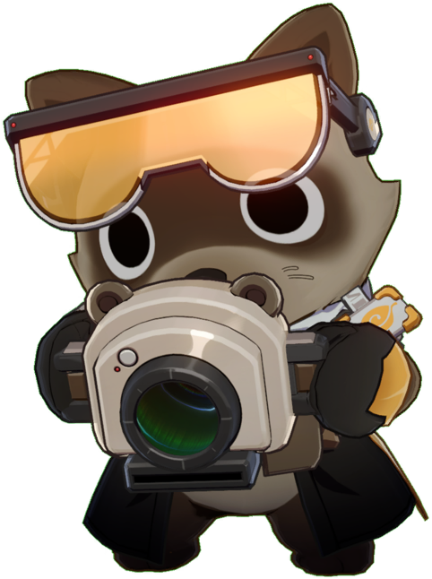

복슬복슬호 자료실
좋아하는 게임의
다음 한 걸음.
오늘의 일정, 캐릭터 육성, 추천 파티.

![에바네시아]()
게임 자료실


지금부터 6주
선택한 항목의 확정 일정이 없습니다.
붕괴: 스타레일 · 도구
아하 타임, 얼마나 빨라질까요?
파티를 고르고 속도를 입력하면 바로 확인할 수 있어요.
한 장씩 쌓아가는 기록
복슬복슬호 자료실
오늘의 일정, 캐릭터 육성, 추천 파티.

선택한 항목의 확정 일정이 없습니다.
붕괴: 스타레일 · 도구
파티를 고르고 속도를 입력하면 바로 확인할 수 있어요.
한 장씩 쌓아가는 기록